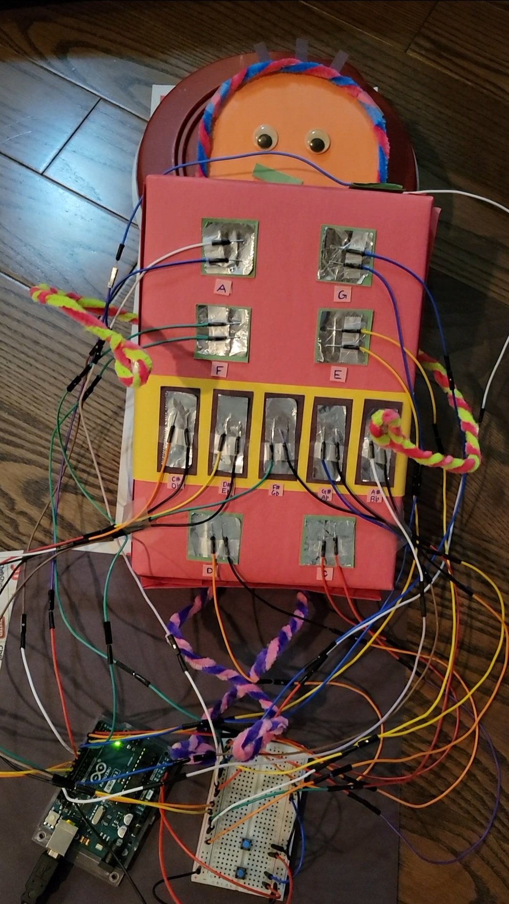

Music Slap is an expressive musical interface that utilizes the human body. It is a werable piece of technology that allows any performer to create music on the go. This musical interface considers the overall experience of the performer, thus it can be used while sitting, standing or even lying down!
Functionality
Multiple pads (switches), each encoded to a musical note in the C4 octave, are attached to a shirt that can be worn by a human user as well as rings made out of aluminium foil are worn on both hands of the user. Tapping an aluminium ring to a pad on the shirt will produce a sound (from the computer using the serial port) of the corresponding musical note. Each pad is labelled with the musical note it corresponds to. As well, both sharps and flats are present in our musical interface!
Music Slap can also switch between different octaves by toggling the two pushbuttons:
if the pushbutton closer to the user is pressed (in the image and demo video below, this would mean the button closer to the puppet), then all the musical notes in the interface decrease to an octave lower than the current octave setting
if the pushbutton further away from the user is pressed (in the image and demo video below, this would mean the button further away from the puppet), then all the musical notes in the interface increase to an octave higher than the current octave setting
The user input is taken via the Arduino code whereas the musical note sounds are produced from the computer attached via a python code file. The Arduino code sends messages to the connected port on the computer when it detects a user input and the python code file listens to messages sent to the port connected to the Arduino using the Serial module. Executing the python file after starting to run the Arduino code allows the two programs to communicate. This communication enables to produce the output sound of a musical note when a pad on the shirt is touched by the aluminium ring. This sound is generated through the pygame.mixer module and emitted via the computer.
The image below showcases the final artifact:
The natural music notes are represented with squares in the interface and are on the red part of the shirt, whereas the sharp and flat music notes are presented in rectangles on the yellow belt.
Note: Due to the limited amount of wiring available, a human-sized interface was not feasible to produce. Hence, a puppet was used to represent the human user in this image and in the demo video showcased later. This puppet allows to get a feel of the interaction.

Concept Development
The following image displays the concept development that took place for this project.